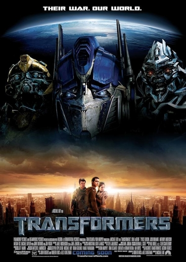

Фильмография Трансформеры
«Трансформеры» (англ. Transformers) — серия фильмов, основанная на франшизе «Трансформеры», которая началась в 1980-х годах.
Серия выпущена компанией Paramount Pictures и состоит из шести фильмов в жанре научно-фантастических боевиков, включая оригинальную серию — начиная с «Трансформеров» (2007) и заканчивая «Трансформерами: Последний рыцарь» (2017) — а также перезапуск начиная с «Бамблби» (2018).
Серию распространяет компания Paramount Pictures, а первые два фильма распространяла вместе с DreamWorks Pictures.
Оригинальная серия «Трансформеров» получила отрицательные или смешанные отзывы, за исключением «Бамблби», который получил положительные отзывы.
Она является 13-й кассовой серией фильмов, с общей суммой в 4,8 миллиарда долларов; два фильма из этой серии собрали более 1 миллиарда долларов каждый.
ТРАНСФОРМЕРЫ (2007)

Фильм повествует о войне автоботов и десептиконов — разумных инопланетных роботов, способных трансформироваться в разнообразную технику.
Предметом их раздора становится могущественный артефакт Великая Искра, который при неправильном использовании может принести в Галактику разрушения и смерть.
Автоботы прилетают на Землю, чтобы защитить Искру от десептиконов, которые хотят использовать её в своих корыстных целях.
Слабые, но смелые люди приходят на помощь автоботам.
Несмотря на то, что Майкл Бэй никогда не был фанатом «Трансформеров», он всё же согласился на предложение будущего продюсера фильма Стивена Спилберга стать режиссёром фильма после того, как побывал в офисе компании Hasbro и больше узнал о мифологии вселенной.
Бэй разработал новый, усложнённый дизайн для роботов, и сделал их второстепенными персонажами, чем вызвал негодование многих фанатов мультсериала и комиксов.
Во время съёмок Бэй старался сохранить как можно больше денег из бюджета фильма для спецэффектов и по этой причине подписал контракты с автомобильной корпорацией General Motors и армией США, благодаря чему получил в свободное использование некоторые образцы автомобилей и техники.
ТРАНСФОРМЕРЫ: МЕСТЬ ПАДШИХ (2009)
17 000 лет назад до н. э. семь Праймов странствовали по Галактике в поисках звёзд для создания Энергона.
Они установили одно правило — не уничтожать планеты, на которых есть жизнь.
Но один из них нарушил это правило, Мегатронус Прайм (впоследствии — Фоллен), и установил на Земле Гаситель звёзд — устройство, собирающее энергию Солнца, последствием уничтожения последнего.
Однако машину можно активировать только с помощью Матрицы лидерства.
Вступив в бой со своими бывшими собратьями, Фоллен проиграл схватку, а Матрица была спрятана Праймами в неизвестном месте на планете.
Прошло два года с момента масштабного столкновения автоботов и десептиконов в Мишн-Сити.
Зло вроде бы побеждено, останки Мегатрона — лидера десептиконов — затоплены на дне Марианской впадины.
Отряд автоботов во главе с Оптимусом Праймом получил масштабное пополнение и был объединён вместе с людьми Леннокса — теперь уже майора — в специальное подразделение под названием «NEST» (Networked Elements: Supporters and Transformers), которое базируется на острове Диего-Гарсия и занимается обезвреживанием оставшихся на планете десептиконов.
ТРАНСФОРМЕРЫ 3: ТЁМНАЯ СТОРОНА ЛУНЫ (2011)
В основе сюжетной завязки третьего фильма лежат реальные события — первая высадка космонавтов на Луне 20 июля 1969 года.
В космическую гонку между СССР и США оказались втянуты автоботы, которые под руководством Сентинела Прайма после поражения в войне с десептиконами бежали с Кибертрона — родной планеты роботов.
Из-за повреждений, звездолёт автоботов разбивается на обратной стороне Луны.
Узнав об этом, президент Кеннеди отдаёт приказ готовить высадку на Луне.
Получив секретный приказ, американские астронавты, высадившиеся на Луне, уходят в радиомолчание, обследуют разбитый звездолёт и находят на борту тела автоботов.
Наше время. Автоботы атакуют ядерные реакторы иранцев на Ближнем Востоке.
Леннокс встречается в Киеве с Юрием Восходчуком, министром энергетики Украины, который говорит, что в Чернобыле имела место находка инопланетного происхождения.
Они едут в Припять.
Тем временем в Чернобыле появляется Шоквейв, который с помощью огромного червя Дриллера забрал необходимую деталь.
Оптимус, защищая людей, отрубил одно из щупалец Дриллера, в которой находилась необходимая деталь.
После того, как Шоквейв ушёл, Оптимус говорит, что это деталь утерянного корабля автоботов, известного как «Ковчег».
Тем временем десептикон Лазербик убивает Восходчука.
ТРАНСФОРМЕРЫ: ЭПОХА ИСТРЕБЛЕНИЯ (2014)

События фильма начинаются с того, как во времена динозавров на планете Земля некие инопланетные существа уничтожают большой участок поверхности, превращая его в необычный металл — трансформий.
После, уже в наше время, Дарси Тайрил прибывает на место раскопок в Арктике, где люди Джошуа Джойса, главы компании KSI обнаружили трансформий, а точнее киберформированных динозавров.
В 2017 году люди вспоминают, как пять лет назад война с десептиконами в Чикаго забрала 1300 человеческих жизней, после чего трансформеров возненавидели.
Группа солдат отряда «Могильный Ветер» обнаруживает Рэтчета, спрятавшегося в трубе на заброшенном корабле.
Они подрывают половину корабля, однако тот выживает и пытается улизнуть.
Тем не менее, им удаётся отстрелить ему ногу.
Молящий о пощаде Рэтчет падает, и в этот момент появляется загадочный наёмный убийца трансформер Локдаун и спрашивает медика о местонахождении Оптимуса Прайма.
Рэтчет отказывается говорить, Локдаун вырывает его Искру и забирает её как трофей.
ТРАНСФОРМЕРЫ: ПОСЛЕДНИЙ РЫЦАРЬ (2017)
В 484 году волшебник короля бриттов Артура Мерлин заключает сделку с двенадцатью рыцарями-стражами.
В качестве вознаграждения за сохранность их тайны пребывания на Земле волшебник просит помочь армии короля в сражении с саксами.
Рыцари дают Мерлину свой артефакт — посох, происхождение которого неизвестно, и трансформируются в составного дракона.
Трёхглавый гештальт летит на помощь войскам Артура.
Ожесточённое сражение заканчивается поражением саксов в Битве при Бадонском холме против бриттов.
Один из кибертронских звездолётов терпит крушение в Чикаго на глазах у группы детей и девушки Изабеллы, выжившей после битвы за Чикаго, а также её двух друзей-трансформеров — Сквикса и Кэнопи.
Происшествие засекает один из дронов СЛТ.
Солдаты отряда успевают уничтожить Кэнопи.
Детям помогают скрыться прибывшие Бамблби и Кейд Йегер.
Кейд пытается оказать помощь раненому пилоту звездолёта, но его ранения оказываются смертельными.
Перед смертью пилот пытается передать Йегеру некий талисман.
Кейд отказывается, но артефакт самостоятельно находит путь к машине Йегера.
Десептикон Баррикейд, выживший после битвы за Чикаго, подъезжает к звездолёту и наблюдает из укрытия за происходящим.
БАМБЛБИ
На планете Кибертрон идёт война между двумя расами трансформеров — жестокими Десептиконами и миролюбивыми Автоботами.
После падения Кибертрона Оптимус Прайм отправляет Би-127 на найденную им планету Земля построить там базу.
Напоследок он говорит, чтобы Би-127 защищал эту планету от Десептиконов, а в случае обнаружения народ Автоботов будет обречён.
Оптимус берёт всю атаку на себя, тем самым прикрывая Би-127.
Улетая с Кибертрона, Би-127 в последний раз видит Оптимуса.
Би-127 попадает на Землю и по воле случая оказывается в учебной зоне.
Джек Бёрнс (Джон Сина), агент Сектора-7 и Би-127 обмениваются взглядами, а затем трансформер убегает, просканировав джип.
Люди были этому удивлены.
Уже у шахты его сбил с ног Хаммер, повредив центральные процессоры.
Поднявшись, Бамблби сказал людям, что не хочет никого ранить.
Внезапно в небе появился F-4 Phantom II.
Бамблби сразу понял, что это не авиация, и советует людям бежать.
Этим военным самолётом оказался десептикон Блицвинг, с которым Би-127 вступил в схватку.
Би-127 не ответил, где прячутся другие автоботы, за что Блицвинг вырвал у противника голосовой модуль и сбросил его с горы.
Би-127 в последний момент успел вырвать у десептикона ракету и выстрелить, убив Блицвинга.
Кроме боевых повреждений у автобота возникли повреждения в клетках памяти, которые постепенно доходят до критического уровня.
Постепенно отключаясь, уже на берегу реки Би-127 успел поменять альт-форму с Джипа на Фольксваген Жук.